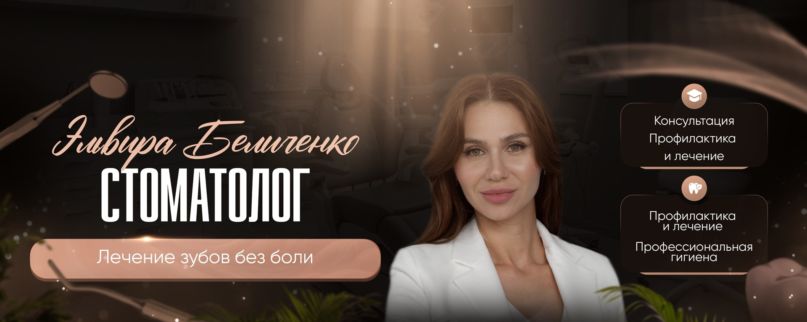

ПРОФИЛАКТИКА
Профессиональная гигиена
Комплексное очищение зубов от мягкого налёта и твёрдых отложений.
Стоматолог в Сургуте
Профилактика, гигиена, отбеливание и бережное лечение — с понятными объяснениями на каждом этапе.

Давайте знакомиться
«Я стараюсь, чтобы лечение было не только качественным, но и понятным для пациента. Объясняю каждый шаг и внимательно отношусь к вашему самочувствию».
Чем могу помочь
Все направления подтверждены описанием сообщества Эльвиры в VK. Итоговый план формируется после осмотра.
Комплексное очищение зубов от мягкого налёта и твёрдых отложений.
Подбор подходящего способа осветления эмали с учётом состояния зубов.
Бережное лечение кариеса и восстановление зубов с вниманием к комфорту.
Регулярный осмотр, рекомендации и раннее выявление проблем.
Запросите актуальный прайс напрямую у специалиста.
Получить консультациюАктивность в VK
Эльвира ведёт профессиональное сообщество и отвечает на вопросы.
Как добраться
Фотографии здания, входа и пути до кабинета 407.
Доверие начинается с диалога
В VK у профессионального сообщества Эльвиры максимальная оценка и более 400 подписчиков.
Смотреть отзыв в VK★★★★★Задайте свой вопрос до визита — Эльвира обычно отвечает в течение нескольких часов.
Перед приёмом
Начинаем с беседы и осмотра. Эльвира объяснит состояние зубов, возможные варианты и дальнейшие шаги.
Точный расчёт возможен после осмотра. Актуальный прайс можно запросить в VK.
Возьмите результаты предыдущих обследований, если они есть, и сообщите о принимаемых препаратах.
Позвоните по номеру +7 (982) 557-05-05 или напишите Эльвире в VK.
Приходите на приём
*Актуальное время уточняйте при записи.